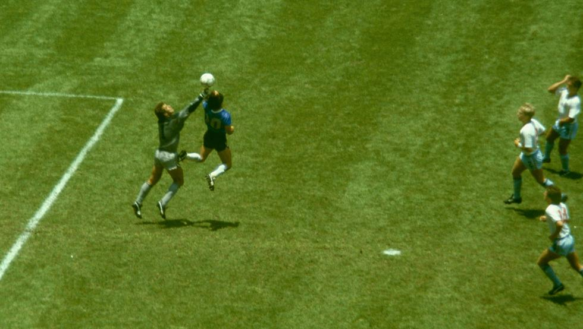

La justicia investiga la muerte de Maradona
La justicia argentina abrió este viernes una investigación para determinar si hubo negligencia en la muerte de Diego Maradona. La fiscalía busca saber si el ícono mundial recibió la atención necesaria. “Ya hay irregularidades”, dijo a la AFP un familiar.
A pocas horas de su muerte, el abogado y amigo de Maradona, Matías Morla, denunció el jueves el hecho de que “la ambulancia tardó más de media hora en llegar a la casa donde estaba el 10”. Y advirtió que llegaría “hasta el final”.Pero ni él ni ningún miembro de su familia han presentado aún denuncia, dijo a la AFP una fuente judicial. “La investigación se abrió porque se trata de una persona fallecida en su casa y nadie firmó su certificado de defunción. Esto no quiere decir que haya sospechas de irregularidades”, agregó la misma fuente bajo condición de anonimato.
“Tenemos que determinar si hicieron lo correcto o no. La enfermera (de guardia cuando murió Maradona) hizo una declaración al fiscal el día que murió Diego, y luego la cambió para finalmente ir frente a la televisión y decir que lo que ella había indicado le fue impuesto. Existe entonces cierta contradicción en su declaración”, precisó a la AFP un familiar que pidió el anonimato. La fiscalía, que está a la espera de los resultados de las pruebas toxicológicas, pidió el expediente médico así como las grabaciones de las cámaras del distrito donde vivió el señor Maradona sus últimos días.
 Otra polémica son las fotos de los directores de funerarias posando, pulgares arriba, junto al ataúd abierto donde yacía el cadáver de Maradona antes del velorio del jueves. Escandalizaron a Argentina a pesar de los reiterados indultos de uno de los autores el viernes. El abogado de Maradona se ha comprometido a procesar a los culpables. Ya se ha comenzado a escuchar a los testigos.
La enfermera, la última que le vio con vida
“Pudimos establecer que una enfermera encargada de cuidarlo es la última persona que lo vio con vida alrededor de las 06:30 hora local (09:30 GMT) del miércoles, durante el cambio de guardia”, dijo la fiscalía en un comunicado. En su testimonio, la enfermera dijo que Maradona “estaba descansando en su cama” y aseguró “que dormía y respiraba con normalidad”. Además, la enfermera que se hizo cargo y estuvo presente en el momento de la muerte aclaró entonces su testimonio y aseguró haberlo “oído moverse” como una hora después.
Anteriormente, había indicado que lo había visto dormir a las 11 a.m. y no había querido molestarlo, prefiriendo esperar la llegada al mediodía de la psiquiatra Agustina Cosachov y el psicólogo Carlos Díaz. Fueron ellos, al ver que Maradona no reaccionaba intentando despertarlo, quienes dieron la alarma. Un médico del barrio intentó reanimarle. La primera ambulancia llegó a las 12:27 p.m., dijo la fiscalía.
La ubicación de la residencia donde estaba convaleciente Maradona había sido elegida para que estuviera cerca de sus hijas. Después de la operación su recuperación iba bien, según su médico personal, el Dr. Luque. Pero la salud de Maradona era frágil debido a su historial cardíaco. También sufría de abstinencia de alcohol, que mezclaba con los muchos medicamentos que tomaba.
“La clínica le había recomendado que fuera a otro lugar para ser hospitalizado, pero la familia decidió lo contrario. Sus hijas firmaron su alta del hospital”, dijo el familiar. Contactado por AFP, su médico aún no ha respondido.
El campeón del mundo de 1986 apareció muy débil el 30 de octubre, fecha de su última aparición, en su 60 cumpleaños, para liderar la formación de sus jugadores en el club Gimnasia y Esgrima La Plata.
Otra polémica son las fotos de los directores de funerarias posando, pulgares arriba, junto al ataúd abierto donde yacía el cadáver de Maradona antes del velorio del jueves. Escandalizaron a Argentina a pesar de los reiterados indultos de uno de los autores el viernes. El abogado de Maradona se ha comprometido a procesar a los culpables. Ya se ha comenzado a escuchar a los testigos.
La enfermera, la última que le vio con vida
“Pudimos establecer que una enfermera encargada de cuidarlo es la última persona que lo vio con vida alrededor de las 06:30 hora local (09:30 GMT) del miércoles, durante el cambio de guardia”, dijo la fiscalía en un comunicado. En su testimonio, la enfermera dijo que Maradona “estaba descansando en su cama” y aseguró “que dormía y respiraba con normalidad”. Además, la enfermera que se hizo cargo y estuvo presente en el momento de la muerte aclaró entonces su testimonio y aseguró haberlo “oído moverse” como una hora después.
Anteriormente, había indicado que lo había visto dormir a las 11 a.m. y no había querido molestarlo, prefiriendo esperar la llegada al mediodía de la psiquiatra Agustina Cosachov y el psicólogo Carlos Díaz. Fueron ellos, al ver que Maradona no reaccionaba intentando despertarlo, quienes dieron la alarma. Un médico del barrio intentó reanimarle. La primera ambulancia llegó a las 12:27 p.m., dijo la fiscalía.
La ubicación de la residencia donde estaba convaleciente Maradona había sido elegida para que estuviera cerca de sus hijas. Después de la operación su recuperación iba bien, según su médico personal, el Dr. Luque. Pero la salud de Maradona era frágil debido a su historial cardíaco. También sufría de abstinencia de alcohol, que mezclaba con los muchos medicamentos que tomaba.
“La clínica le había recomendado que fuera a otro lugar para ser hospitalizado, pero la familia decidió lo contrario. Sus hijas firmaron su alta del hospital”, dijo el familiar. Contactado por AFP, su médico aún no ha respondido.
El campeón del mundo de 1986 apareció muy débil el 30 de octubre, fecha de su última aparición, en su 60 cumpleaños, para liderar la formación de sus jugadores en el club Gimnasia y Esgrima La Plata.
Ponen precio a la camiseta de la ‘Mano de Dios’
La camiseta que usó Diego Maradona cuando anotó su famoso gol ‘Mano de Dios’ contra Inglaterra en la Copa del Mundo de 1986 en México podría estar disponible por 2 millones de dólares (1,7 millones de euros) tras la muerte del argentino el miércoles, según dice un experto estadounidense en recuerdos deportivos. La camiseta es propiedad del exjugador de Inglaterra Steve Hodge, quien la obtuvo de Maradona después del partido en el que su intento de pase hacia atrás condujo al polémico gol que ayudó a eliminar a Inglaterra del Mundial que Argentina ganó en México.  “Estaba caminando por el túnel y Maradona venía en la dirección opuesta. Simplemente me saqué la camisa y nos las cambiamos allí mismo”, dijo Hodge, quien se había retrasado en dejar el campo para hacer una entrevista por televisión a los medios británicos. La camiseta se encuentra actualmente en exhibición en el Museo Nacional de Fútbol de Inglaterra en Manchester. “Es muy difícil medir (el valor) con la camiseta de la ‘Mano de Dios’, pero sé que el propietario estaba buscando una venta privada de 2 millones de dólares”, dijo a Reuters David Amerman, de Goldin Auction en Nueva Jersey. “Ciertamente podría ser una posibilidad, los valores han subido bastante en el fútbol”.
Desvelan las cosas que encontraron en la habitación de Maradona
Poco a poco se van desvelando más detalles de cómo se produjo su fallecimiento, como por ejemplo qué había en su cuarto. Según la agencia de noticias Telam, en la habitación del Pelusa encontraron los sándwiches de pan de molde que le habían dejado a Diego la noche anterior para cenar y que ni había probado. También había varios medicamentos contra la acidez, todos ellos con receta médica, descartando que puedan tener relación con su muerte.